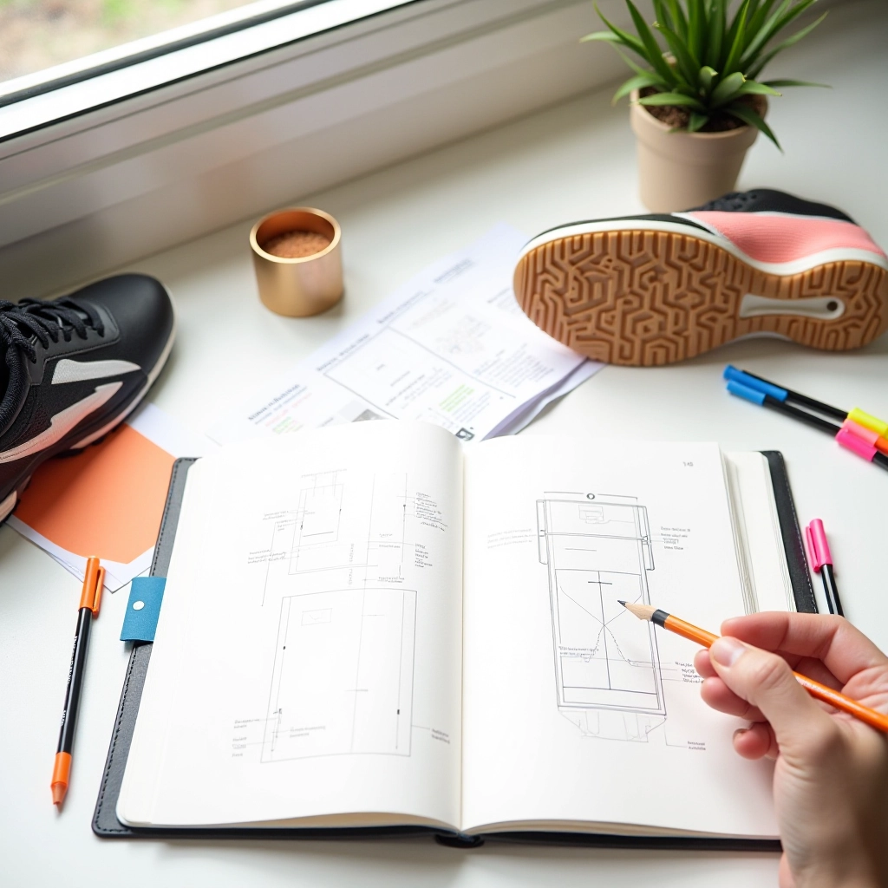

فريق ملعب الانزلاق التحريري
نحضّر محتوى موثوق عن تقنيات الانزلاق على الملاعب الترابية في التنس
فريق متخصص في البحث والتحقق من المعلومات وتحديث الأدلة بشكل مستمر لمساعدة اللاعبين على تحسين مهاراتهم
لماذا نقوم بهذا
البحث العميق
نبحث في كل موضوع بعناية شديدة. لا نكتفي بالمعلومات السطحية — نتحقق من التفاصيل الفنية والنصائح العملية قبل أن نكتبها.
التحقق الدقيق
كل معلومة تمر بمراجعة شاملة. نتأكد من أن النصائح آمنة وفعّالة ومناسبة للاعبين في مستويات مختلفة.
التحديث المستمر
نراجع محتوانا بشكل دوري. الرياضة تتطور، والتقنيات تتحسن — نحرص على أن تبقى أدلتنا حديثة وفعّالة.
الاهتمام باللاعبين
نختار المواضيع بناءً على احتياجات اللاعبين الفعلية. نركز على التحديات التي يواجهونها حقاً على الملعب.
كيف نعمل
فريقنا يعمل بطريقة منظمة وشفافة. كل محتوى يمر بخطوات معينة قبل أن يصل إليك. نريدك أن تثق بما تقرأه لأنك تعرف كيف تم إعداده.
نحن لا نبالغ في الوعود ولا نقدم نصائح غير آمنة. نستخدم لغة واضحة وبسيطة، بعيدة عن المصطلحات المعقدة. كل ما نكتبه يهدف إلى مساعدتك على الفهم والتطبيق الفعلي.
اختيار الموضوع
نختار المواضيع التي يحتاجها اللاعبون فعلاً. قد يأتي الموضوع من أسئلة لاعبين أو من احتياجات نرى أنها مهمة.
البحث والدراسة
نقوم بدراسة تفصيلية. نبحث في الدراسات، والتقنيات المثبتة، والممارسات الصحيحة على الملاعب الترابية.
الكتابة والتدقيق
نكتب بلغة واضحة ومباشرة. كل جملة تمر بمراجعة دقيقة للتأكد من صحتها وفائدتها للقارئ.
المراجعة النهائية
نراجع كل شيء مرة أخيرة. نتأكد من الدقة والسلامة والوضوح قبل النشر.
التحديث الدوري
بعد النشر، لا نتركه. نراجع المحتوى بشكل منتظم ونحدثه عند الحاجة لضمان بقاؤه مفيداً وحديثاً.
ما نكتب عنه
نركز على المواضيع التي تساعد اللاعبين على تحسين أدائهم على الملاعب الترابية
تقنيات الانزلاق
نشرح خطوات الانزلاق الصحيحة من البداية للاحتراف. نركز على وضعية الجسم والحركات الأساسية والأخطاء الشائعة التي يجب تجنبها.
اختيار المعدات
نساعدك على اختيار الحذاء المناسب والملابس والمعدات الأخرى. كل شيء له دور في الأداء على الطين.
التمارين والتطوير
نقدم تمارين عملية لتحسين التوازن والثبات والقوة. هذه التمارين تساعدك على تنفيذ الانزلاق بكفاءة وأمان.
تنفيذ الضربات
نشرح كيفية تنفيذ الضربات المختلفة أثناء الانزلاق. من الضربات الأمامية إلى الخلفية والإرسالات.
الوقاية من الإصابات
نركز على كيفية الانزلاق بأمان وتجنب الإصابات. الاحترافية تعني اللعب الذكي والآمن.
التطور والممارسة
نقدم نصائح عملية عن كيفية الممارسة بفعالية والتطور المستمر. الاحتراف يأتي من الممارسة الذكية والمنتظمة.
مبادئنا
هذا ما نؤمن به ونطبقه في كل ما نكتبه
الصدق والشفافية
نخبرك بالحقيقة حتى لو كانت غير مريحة. لا نبالغ في الوعود ولا نخفي الصعوبات. تستحق أن تعرف ما تتوقعه فعلاً.
الوضوح والبساطة
نكتب بلغة واضحة بعيدة عن المصطلحات المعقدة. إذا لم نستطع شرح شيء بطريقة بسيطة، فإننا نعيد صياغته حتى يكون مفهوماً.
الدقة والتحقق
كل معلومة تم التحقق منها. نحن لا ننشر شيئاً إلا إذا تأكدنا من صحته. الخطأ البسيط قد يؤثر على أدائك.
الاهتمام بك
نكتب للاعب الحقيقي، وليس للفلسفة. نفكر في احتياجاتك وتحدياتك على الملعب. محتوانا موجود لمساعدتك أنت.
مساحة عملنا — حيث يتم البحث والتحقق والكتابة والمراجعة
من نحن
نحن فريق متخصص في إعداد وتدقيق محتوى تقنيات الانزلاق على الملاعب الترابية في التنس. لدينا خلفية قوية في البحث والكتابة التقنية، وشغف حقيقي بالرياضة.
نعمل مع ملعب الانزلاق للتنس المصري Ltd، وهي منظمة مكرسة لتحسين مستوى اللعبة في مصر. نحن لا نقبل معايير منخفضة في محتوانا. كل مقال يعكس التزامنا بالجودة والدقة.
ما يجعلنا مختلفين؟ نحن نستمع فعلاً. نقرأ تعليقات اللاعبين ونسألهم عما يريدون معرفته. محتوانا ينمو من احتياجاتك الحقيقية وليس من فكرة مسبقة عما قد يكون مفيداً.
ابدأ مع أدلتنا الآن
لدينا مجموعة من المقالات والأدلة العملية حول تقنيات الانزلاق على الملاعب الترابية. كل شيء مكتوب بوضوح وقابل للتطبيق الفوري.